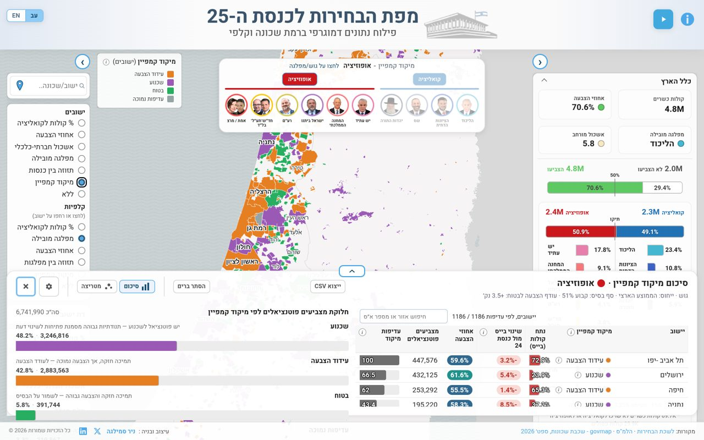
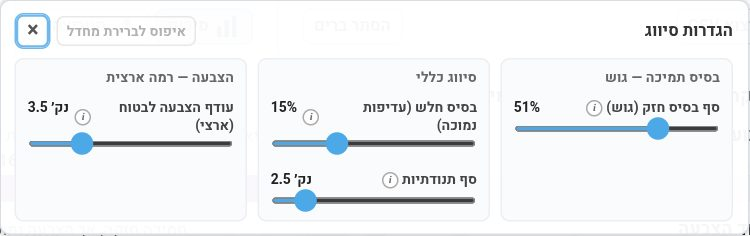
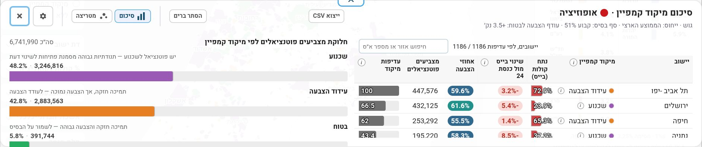
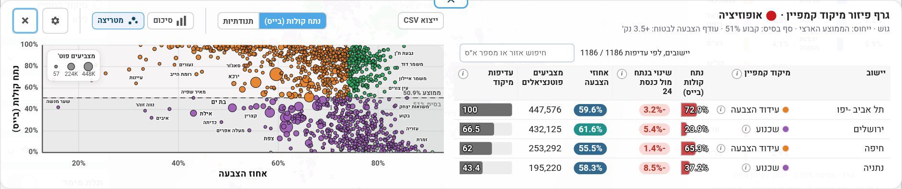

איך עובד מיקוד הקמפיין במפה
מפת הבחירות לכנסת ה-25 · הסבר על שיטת הסיווג, הערכים הקבועים ומה אפשר לשנות
מה המפה עושה
המפה בוחנת כל יישוב, ובתוכו גם אזורים סטטיסטיים, ביחס ליעד שבוחרים: גוש (קואליציה או אופוזיציה) או מפלגה אחת. כל מקום מסווג לאחת מארבע קטגוריות. ההשוואה היא תמיד בין הבחירות לכנסת ה-24 לבין הבחירות לכנסת ה-25.

ארבע הקטגוריות
על מה הסיווג נשען
שלושה נתונים: חלקו של היעד בקולות באותו מקום בכנסת ה-25, אחוז ההצבעה שם לעומת הממוצע (הממוצע הארצי הוא 70.6%), והשינוי בחלק של היעד לעומת הכנסת ה-24.
לצד הקטגוריה מחושב גם ציון עדיפות. הוא משקלל את מספר בעלי זכות הבחירה יחד עם פער ההצבעה מהממוצע (משקל 40%), את עוצמת השינוי מהכנסת ה-24 (35%) ואת חלקו של היעד (25%). הציון מתאר הזדמנות לפי הנתונים של הבחירות האחרונות. הוא אינו תחזית ואינו בוחן מי יצביע אם אחוז ההצבעה יעלה.
הכללים והערכים הקבועים
אלה ערכי ברירת המחדל. כולם פרמטרים שאפשר לשנות במפה (ראו בהמשך).
| פרמטר (כפי שמופיע במפה) | ברירת מחדל | מה הוא קובע |
|---|---|---|
| סף בסיס חזק (גוש) | 51% | מעל נתח זה האזור נחשב "בסיס חזק" של הגוש. אז הוא "בטוח" אם ההצבעה גבוהה, ו"עידוד הצבעה" אם לא. |
| רצפת בסיס ותקרת בסיס (מפלגה) | 12% ו-30% | במפלגה בודדת הסף נקבע ביחס לחלקה הארצי, ותמיד בין שני הערכים האלה. |
| מכפיל ממוצע יעד (מפלגה) | 1.35 | סף מפלגה = הממוצע הארצי של המפלגה כפול המכפיל, בין הרצפה לתקרה. |
| עודף הצבעה לבטוח (ארצי) | 3.5 נקודות אחוז | בבסיס חזק, כמה נקודות מעל הממוצע צריכה להיות ההצבעה כדי להיחשב "בטוח". |
| עודף הצבעה לבטוח (מקומי) | 5 נקודות אחוז | אותו כלל בתוך יישוב: אזור סטטיסטי מול הממוצע של היישוב שלו. מופיע כשנכנסים ליישוב. |
| בסיס חלש (עדיפות נמוכה) | 15% | מתחת לנתח זה, ואם גם השינוי קטן, האזור מסווג "עדיפות נמוכה". |
| סף תנודתיות | 2.5 נקודות אחוז | שינוי בנתח מתחת לסף נחשב קטן. מעליו האזור נכנס ל"שכנוע". |
בכל בחירה של יעד מוצגים רק הפרמטרים הרלוונטיים אליו. לגוש יופיע סף בסיס חזק אחד. למפלגה יופיעו הרצפה, התקרה והמכפיל. עודף ההצבעה הארצי מופיע ברמה הארצית והמקומי בתוך יישוב.
איך משנים את הערכים
בכרטיס הסיכום של מיקוד הקמפיין יש כפתור גלגל שיניים, "הגדרות סיווג". הוא פותח את הפרמטרים כמחוונים. אחרי שינוי הסיווג מחושב מחדש והסיכום, הטבלה והמפה משתנים בהתאם. אפשר לחזור לערכים המקוריים בלחיצה על "איפוס לברירת מחדל". השינוי נשמר רק בלשונית הפתוחה בדפדפן של מי שביצע אותו.

שתי דרכי הצגה
הנתונים מוצגים בשתי הצגות, ואפשר לעבור ביניהן בכפתורים בראש הכרטיס. "סיכום" מראה כמה בעלי זכות בחירה נמצאים בכל קטגוריה, לצד טבלת יישובים. "מטריצה" מציבה כל יישוב לפי אחוז ההצבעה (ציר אופקי) ונתח הקולות של היעד (ציר אנכי), בצבע הקטגוריה ובגודל לפי מספר המצביעים הפוטנציאליים.


מה רואים בנתונים
בגוש האופוזיציה כיעד, 48.2% מבעלי זכות הבחירה (3.2 מיליון מתוך 6.74 מיליון) גרים ב-426 יישובים שמסווגים "שכנוע", 42.8% ב-526 יישובים של "עידוד הצבעה", 5.8% בבטוחים ו-3.3% בעדיפות נמוכה. זה תיאור של המצב בבחירות האחרונות, לא תחזית.
מה חשוב לדעת
- הסיווג הוא כלי לקריאת התוצאות של הבחירות האחרונות. הוא אינו חיזוי של בחירות עתידיות.
- הספים הם החלטות מתודולוגיות, ולכן אפשר לשנות אותם ולראות איך התמונה משתנה.
- בהשוואה לכנסת ה-24 נתוני הרשימה המשותפת אינם נכללים בחישוב של הגושים. בשורת חד"ש-תע"ל-בל"ד היא מושווה לרשימה המשותפת של הכנסת ה-24.
- מקורות הנתונים: ועדת הבחירות המרכזית והלמ"ס.